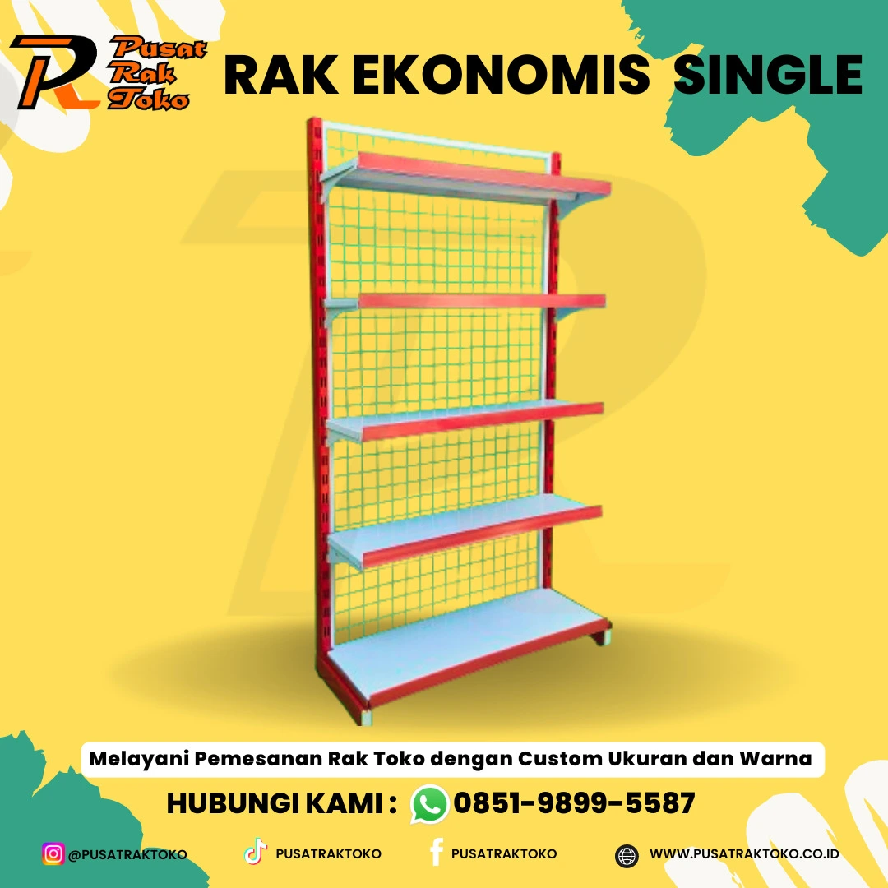
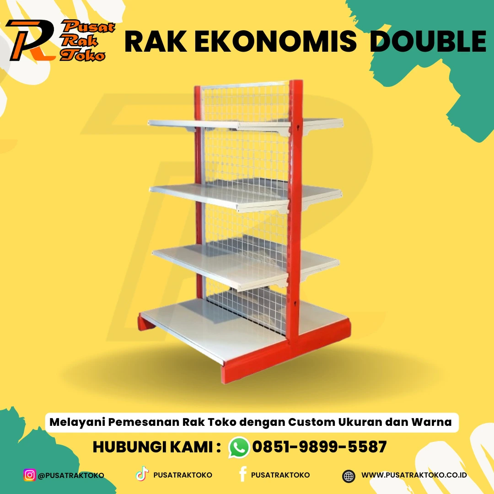
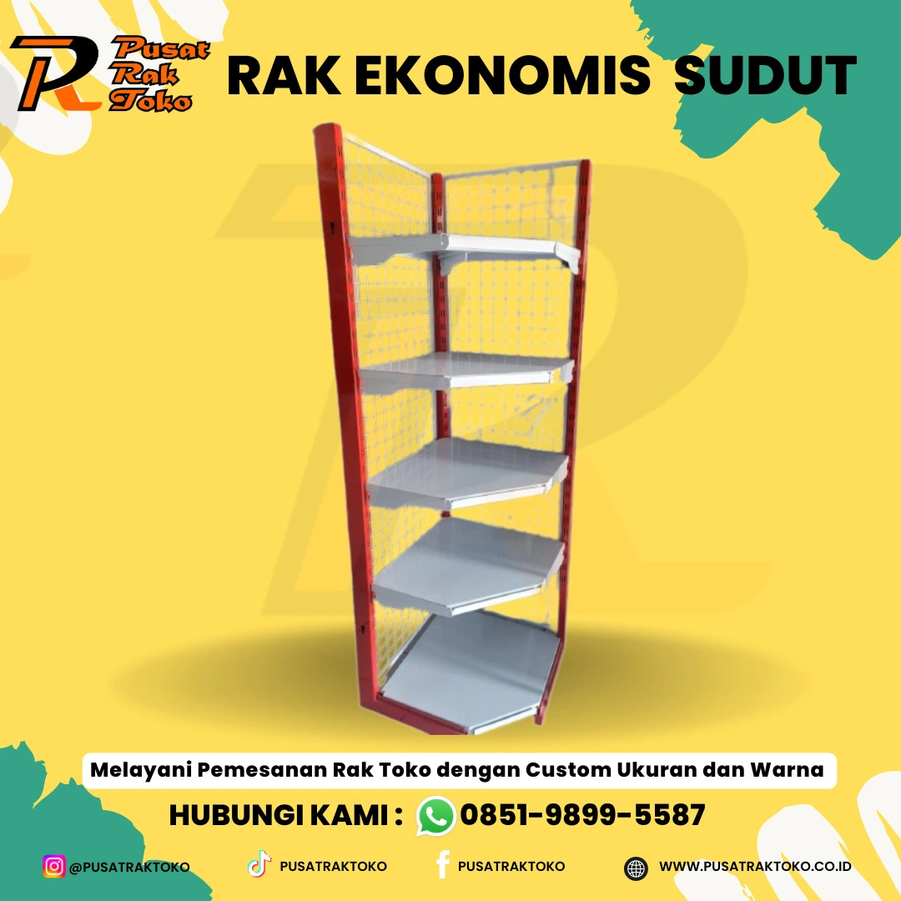
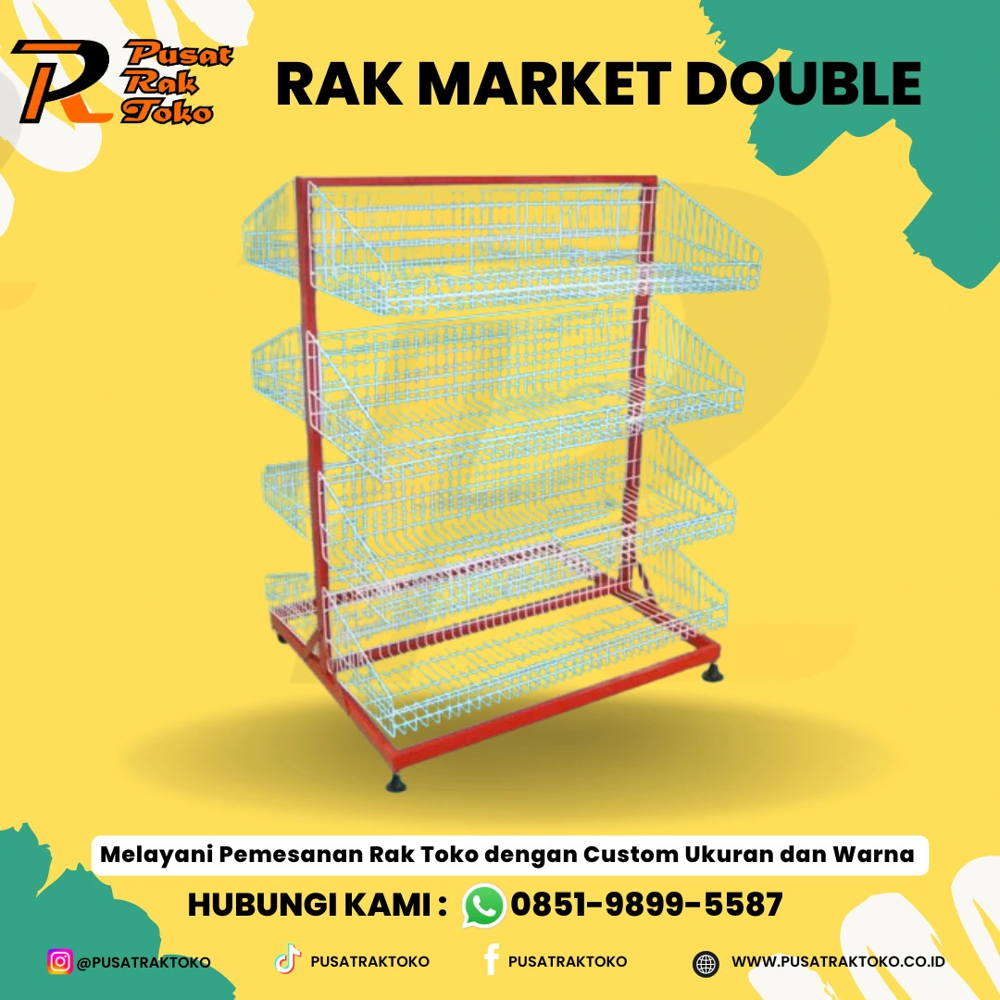

rak supermarket adalah salah satu elemen esensial dalam industri retail
modern. Sebagai alat penyimpanan dan display produk, rak supermarket
memainkan peran penting dalam menata barang-barang di dalam toko dengan
cara yang rapi, terorganisir, dan menarik bagi konsumen. Dalam artikel
ini, kita akan membahas jenis-jenis rak supermarket, fungsinya, serta
bagaimana pemilihan rak yang tepat dapat mempengaruhi pengalaman belanja
pelanggan dan profitabilitas toko.
1. Jenis-jenis Rak Supermarket




Rak supermarket hadir dalam berbagai bentuk dan ukuran,
masing-masing dirancang untuk menampung jenis produk tertentu atau
untuk memenuhi kebutuhan spesifik dari pengaturan ruang toko.
Beberapa jenis rak yang umum digunakan di supermarket adalah:
-
Rak Gondola Rak gondola adalah jenis rak yang paling umum ditemukan
di supermarket. Biasanya terdiri dari beberapa tingkat dan sering
ditempatkan di lorong-lorong utama toko. Rak ini memiliki sistem
yang fleksibel, memungkinkan penataan ulang ketinggian atau
penambahan unit rak sesuai kebutuhan produk yang dipajang.
-
Rak Display Rak ini didesain secara khusus untuk menampilkan
produk-produk tertentu, biasanya produk promosi atau barang-barang
yang sedang diskon. Rak display umumnya diletakkan di area
strategis, seperti pintu masuk atau di dekat kasir, untuk menarik
perhatian konsumen.
-
Rak Dinding Rak dinding ditempatkan di sepanjang sisi toko dan
digunakan untuk menyimpan barang-barang dengan volume atau ukuran
besar. Rak ini ideal untuk produk-produk seperti botol minuman,
makanan kaleng, atau barang-barang kebutuhan rumah tangga lainnya.
-
Rak Penyimpanan Berpendingin Rak ini digunakan untuk produk-produk
segar seperti buah-buahan, sayuran, susu, daging, dan makanan beku.
Rak berpendingin dirancang dengan ventilasi khusus dan suhu yang
terkontrol untuk menjaga kesegaran barang-barang yang dipajang.
2. Fungsi Rak Supermarket
Rak supermarket memiliki beberapa fungsi utama yang penting bagi
kelancaran operasional toko, di antaranya:
-
Pengaturan Produk yang Efisien Rak supermarket membantu dalam
penataan produk secara sistematis, sehingga memudahkan pelanggan
untuk menemukan barang yang mereka butuhkan. Dengan penataan yang
baik, barang-barang lebih mudah diakses dan terlihat lebih menarik.
-
Meningkatkan Daya Tarik Visual Produk yang dipajang dengan rapi di
rak supermarket dapat meningkatkan daya tarik visual bagi pelanggan.
Penempatan produk pada level mata atau penggunaan warna rak yang
kontras dengan kemasan produk dapat mempengaruhi keputusan pembelian
konsumen.
-
Pengelolaan Ruang yang Optimal Ruang di dalam toko sangat berharga,
dan rak supermarket membantu dalam memaksimalkan penggunaan ruang
yang ada. Dengan rak yang dirancang sesuai kebutuhan, supermarket
dapat menampung lebih banyak barang tanpa mengorbankan kenyamanan
pelanggan.
-
Mempermudah Inventarisasi Rak yang teratur juga membantu staf toko
dalam melakukan pengecekan inventaris. Barang yang disusun dengan
baik akan lebih mudah dihitung dan dipantau ketersediaannya,
sehingga meminimalkan risiko kekurangan stok atau produk kadaluarsa.
3. Pengaruh Rak Supermarket terhadap Pengalaman Belanja
Pemilihan dan penataan rak yang tepat sangat mempengaruhi pengalaman
belanja pelanggan. Rak yang terlalu tinggi atau terlalu rendah bisa
membuat pelanggan kesulitan mengambil barang. Sebaliknya, rak yang
dirancang dengan baik, serta penempatan produk yang strategis, bisa
membuat proses belanja lebih menyenangkan dan efisien.
Penggunaan rak yang rapi dan teratur juga dapat menciptakan suasana
toko yang nyaman dan terorganisir. Toko yang berantakan, dengan
barang-barang yang ditempatkan secara sembarangan, dapat membuat
pelanggan merasa tidak nyaman dan enggan kembali.
4. Kesimpulan
Rak supermarket bukan hanya sekadar alat penyimpanan, tetapi juga
merupakan elemen penting yang berkontribusi terhadap kesuksesan toko
secara keseluruhan. Rak yang tepat dapat meningkatkan daya tarik
produk, mempermudah pengelolaan inventaris, dan memberikan pengalaman
belanja yang lebih baik bagi pelanggan. Oleh karena itu, pemilihan
jenis dan desain rak yang sesuai dengan kebutuhan dan karakteristik
toko sangatlah penting.
Dalam industri retail yang sangat kompetitif, penataan yang baik dan
penggunaan rak supermarket yang optimal bisa menjadi salah satu kunci
untuk memenangkan hati pelanggan dan meningkatkan penjualan.